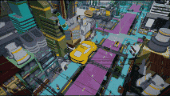
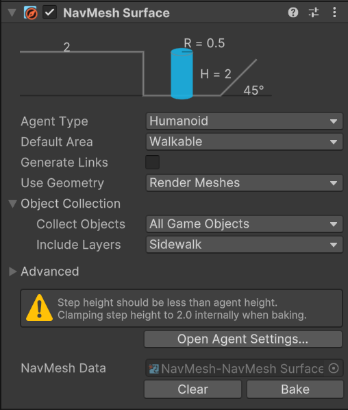
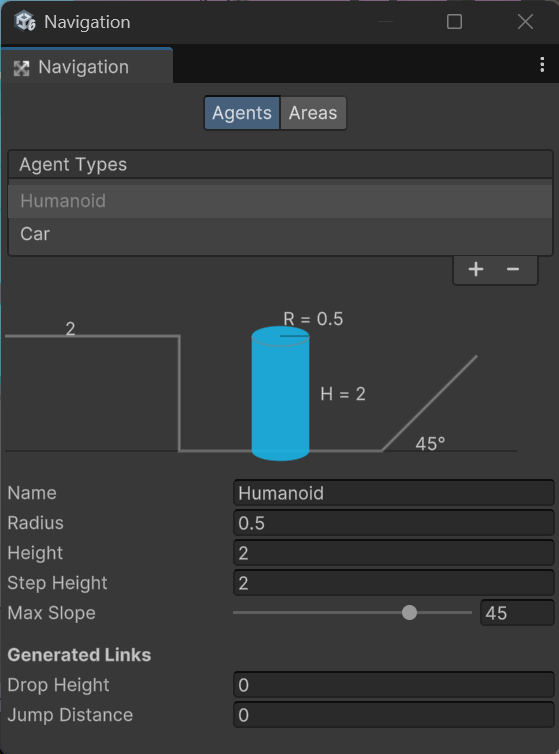
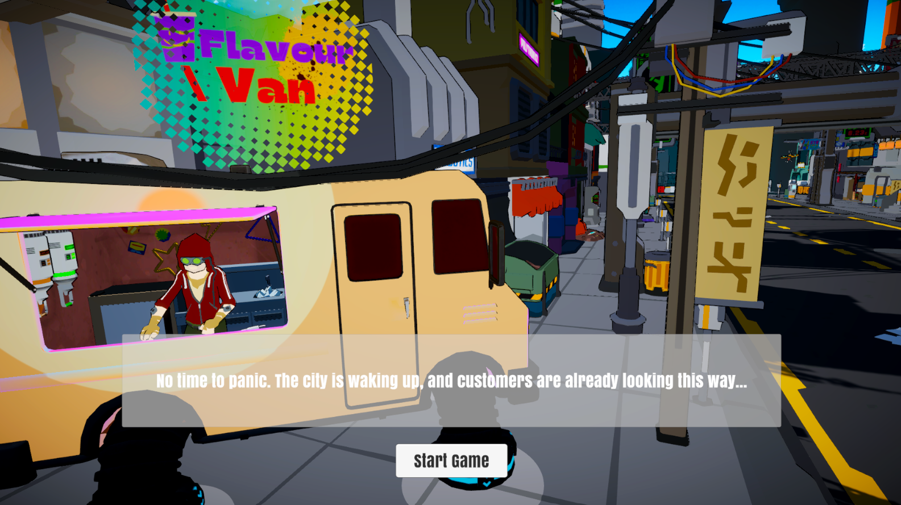

When Synthetic Perfection Reigns, Can a Simple Drink Made with Care Bring Back the Heart of Humanity?
"You are the operator of a food truck offering handcrafted drinks in a future ruled by synthetic nutrition. As society divides between efficiency and tradition, your blends bring a taste of humanity to a world craving connection.
In this future dominated by convenience, every cup tells a story."
Inspiration
Observations by the Roadside
Near the subway station by my home in China, street vendors, often elderly, gather daily to sell homegrown vegetables. When I was around eight, my sister and I also ran a small night market stall for a week. My family still laughs about how I fell asleep on the stall cloth one night, though I barely remember it. In high school, I once sold school newspapers, managing just 11 copies after a morning of effort.
These experiences make me wonder: with e-commerce and modern trends, is it harder for small vendors to thrive?
Their business often depends on trust and human connection, yet they face biases about hygiene, quality, and reliability. Inspired by their struggles, I thought of designing a game exploring their world, powered by interactions with
Large Language Models (LLMs).
Sci-Fi Inspiration and the Birth of NutriSynth
As a sci-fi enthusiast, I've always been fascinated by futuristic worlds where technology redefines humanity. Films like Blade Runner 2049, with its synthetic protein farms, sparked my imagination. Observing real-world tensions between tradition and innovation inspired me to envision a future where artificial nutrition dominates, reflecting society's shifting values.
This led to the creation of NutriSynth—a synthetic product promising efficiency and perfection but dividing society over its impact on culture and human connection. Drawing from these themes, I set my game in a
near-future
world shaped by this tension, exploring how progress and tradition collide in everyday life.
Ideation
Brainstorm
Storyboard
Mechanics
This game is built on Dynamic Dialogue, where players interact with customers to understand their tastes and personalities.
Crafting Blends lets players mix 18 unique ingredients, balancing flavor, effects, and cost to create the perfect drink.
Resource Management challenges players to manage ingredients wisely, optimize benefits, and avoid allergens.
Level design
Instead of a traditional level design with distinct areas, NutriSynth's
"levels" are the customers themselves—each with unique personalities, needs, and challenges.
🧑ChatGPT NPC design
Various potential customers with distinct personalities are set in the game scene, each generated through a combination of predefined and randomized parameters. These factors—mood, preferences, and dialogue style—serve as the initial prompt for ChatGPT-4o, which powers customer interactions. This allows each character to dynamically respond to the player, making conversations feel more natural and immersive. Combined with their appearance, expressive animations, gestures, and reactions, this system brings the customers to life, ensuring every interaction is unique, engaging, and full of personality.
📁CustomerManager.cs->'Activate the customer'
📁CustomerProfile.cs & CustomerController.cs ->'Animator & BehaviorGraph'
📢What makes it even more immersive...The sounds!
-📁AudioManager.cs manages both background music and SFX to create an immersive game atmosphere.
-📁VoiceManager.cs brings customers to life by giving them unique, natural-sounding voices, with the help of Eleven Labs' API.
–Each NPC has a stored voice ID, ensuring consistent character voices throughout interactions. When ChatGPT generates a response for a customer, VoiceManager.cs retrieves the correct voice ID and sends the text to Eleven Labs API for voice synthesis. The generated speech is then played in real-time, making conversations more engaging and natural.
🚶 AI Navigation Paths
Area for road traffics
Area for pedestrians
🚀 Flying Cars



Game Flow
Mainly controlled by📁GameManager.cs, the game follows a structured state-based flow using the GameState enum.
public enum GameState{
Idle, // Default state, allows NPC interaction and opening Shop/Guide
Guide, // State when the Guide is open
Shop, // State when the Shop is open
Dialogue, // State for interacting with NPCs
Blending // State for creating blends
}
Start
"It's your first day running the food truck… but your boss is nowhere to be found."

Tutorial
A NPC named Patrick leads the tutorial, guiding players through the basics of running the food truck. Instead of a rigid step-by-step guide, players type responses into the input box, making the tutorial feel like a natural conversation while introducing the dynamic dialogue system.
Menu – Learn how to check recipes. Shop – Restock ingredients for future blends. Customer Orders – Understand the different types of blends customers might request. Blend System